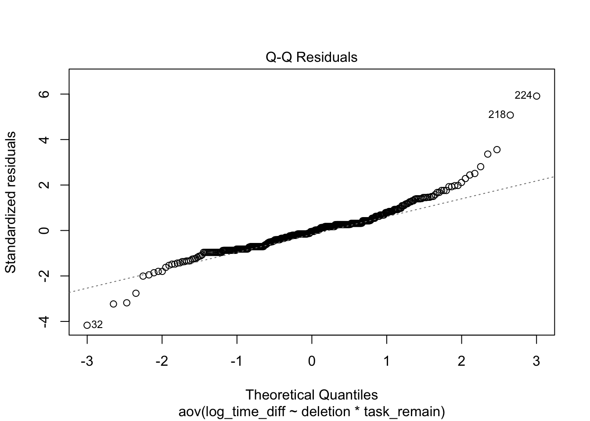

This project analyzed how people make decisions when switching tasks, focusing on the effect of losing prior progress.
What I Did
Conducted a 2x2 experimental study
Analyzed switching behavior using logistic regression
Used ANOVA to examine perceived differences in task completion and route construal
Results
Participants were less likely to switch tasks when prior progress was framed as being lost. The project helped show how framing can influence decision-making behavior.
Tools Used
R, Statistical Modeling, Data Analysis
library(rio)library(mosaic)
Registered S3 method overwritten by 'mosaic':
method from
fortify.SpatialPolygonsDataFrame ggplot2
The 'mosaic' package masks several functions from core packages in order to add
additional features. The original behavior of these functions should not be affected by this.
Attaching package: 'mosaic'
The following objects are masked from 'package:dplyr':
count, do, tally
The following object is masked from 'package:Matrix':
mean
The following object is masked from 'package:ggplot2':
stat
The following object is masked from 'package:rio':
factorize
The following objects are masked from 'package:stats':
binom.test, cor, cor.test, cov, fivenum, IQR, median, prop.test,
quantile, sd, t.test, var
The following objects are masked from 'package:base':
max, mean, min, prod, range, sample, sum
── Conflicts ────────────────────────────────────────── tidyverse_conflicts() ──
✖ mosaic::count() masks dplyr::count()
✖ purrr::cross() masks mosaic::cross()
✖ mosaic::do() masks dplyr::do()
✖ tidyr::expand() masks Matrix::expand()
✖ dplyr::filter() masks stats::filter()
✖ dplyr::lag() masks stats::lag()
✖ tidyr::pack() masks Matrix::pack()
✖ mosaic::stat() masks ggplot2::stat()
✖ mosaic::tally() masks dplyr::tally()
✖ tidyr::unpack() masks Matrix::unpack()
ℹ Use the conflicted package (<http://conflicted.r-lib.org/>) to force all conflicts to become errors
library(car)
Loading required package: carData
Attaching package: 'car'
The following object is masked from 'package:purrr':
some
The following objects are masked from 'package:mosaic':
deltaMethod, logit
The following object is masked from 'package:dplyr':
recode
library(dplyr)library(summarytools)
Attaching package: 'summarytools'
The following object is masked from 'package:tibble':
view
library(psych)
Attaching package: 'psych'
The following object is masked from 'package:car':
logit
The following objects are masked from 'package:mosaic':
logit, rescale
The following objects are masked from 'package:ggplot2':
%+%, alpha
Attaching package: 'effectsize'
The following object is masked from 'package:psych':
phi
cho <-read.csv("/Users/joeykent/Desktop/winter2026/experiencing_research/a_Winter_26_Cho_Doubling_Back_March_9_2026_20_14_copy.csv")head(cho)
nodel_75_choice nodel_75_doctortime nodel_75_schooltime nodel_75_strtovr
1 NA NA NA NA
2 NA NA NA NA
3 NA NA NA NA
4 2 600 420 4
5 2 250 200 5
6 NA NA NA NA
del_100_choice del_100_doctortime del_100_schooltime del_100_strtovr
1 1 180 180 4
2 NA NA NA NA
3 NA NA NA NA
4 NA NA NA NA
5 NA NA NA NA
6 NA NA NA NA
nodel_100_choice nodel_100_doctortime nodel_100_schooltime nodel_100_strtovr
1 NA NA NA NA
2 NA NA NA NA
3 NA NA NA NA
4 NA NA NA NA
5 NA NA NA NA
6 2 400 200 5
del_75_choice del_75_doctortime del_75_schooltime del_75_strtovr id
1 NA NA NA NA 853627
2 2 630 315 2 164755
3 1 350 250 1 340689
4 NA NA NA NA 723102
5 NA NA NA NA 939860
6 NA NA NA NA 627062
condition deletion task_remain switch time_diff strtovr doctor_time
1 del_100 1 1 0 0 4 180
2 del_75 1 0 1 315 2 630
3 del_75 1 0 0 100 1 350
4 nodel_75 0 0 1 180 4 600
5 nodel_75 0 0 1 50 5 250
6 nodel_100 0 1 1 200 5 400
school_time log_time_diff
1 180 0.0000000
2 315 0.6931472
3 250 0.3364722
4 420 0.3566749
5 200 0.2231436
6 200 0.6931472
View(cho)
old_cho <- cho %>%mutate(deletion =1- deletion,task_remain =1- task_remain)View(old_cho)# Making the decision to stay the value of 1# cho$switch <- 1 - cho$switch# Reverse coding construalcho_reverse <- old_cho %>%mutate(strtovr = (7+1) - strtovr)View(cho_reverse)#Factoringold_cho$deletion <-factor(old_cho$deletion)old_cho$task_remain <-factor(old_cho$task_remain)cho$deletion <-factor(cho$deletion)cho$task_remain <-factor(cho$task_remain)cho_reverse$deletion <-factor(cho_reverse$deletion)cho_reverse$task_remain <-factor(cho_reverse$task_remain)
# Considering Outliers for Route Time# favstats(cho$nodel_75_doctortime)# cho_clean <- cho %>%# filter(doctor_time < 2000)# favstats(cho_clean$doctor_time)
The z score for the deletion variable is 2.282 (significant), task_remaining variable is 0.829 (not significant), and the relationship between the two variables is 0.737 (not significant). For odds ratio and confidence interval, deletion variable is 1.972 [1.10, 3.56] (significant), task_remaining variable is 1.289 [0.71, 2.36] (not significant), and the relationships between the two variables is 1.370 [0.59, 3.17] (not significant)
# Running 2x2 ANOVA test for Perceived Route Lengthroute_length_model <-aov( log_time_diff ~ deletion * task_remain, data = cho )summary(route_length_model)
Df Sum Sq Mean Sq F value Pr(>F)
deletion 1 0.00 0.0043 0.011 0.916
task_remain 1 0.77 0.7659 2.028 0.155
deletion:task_remain 1 0.35 0.3492 0.925 0.337
Residuals 368 138.95 0.3776
# Normality Testplot(route_length_model, which =2)

shapiro.test(residuals(route_length_model))
Shapiro-Wilk normality test
data: residuals(route_length_model)
W = 0.92061, p-value = 4.013e-13
# Running 2x2 ANOVA test for Perceived Route Construalroute_construal_model <-aov( strtovr ~ deletion * task_remain, data = cho )summary(route_construal_model)
Df Sum Sq Mean Sq F value Pr(>F)
deletion 1 2.9 2.882 0.864 0.353
task_remain 1 8.1 8.132 2.439 0.119
deletion:task_remain 1 2.9 2.860 0.858 0.355
Residuals 368 1227.1 3.334